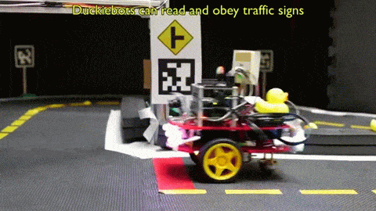
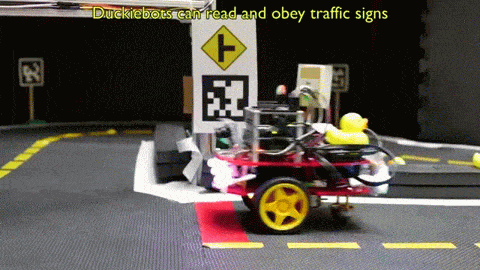
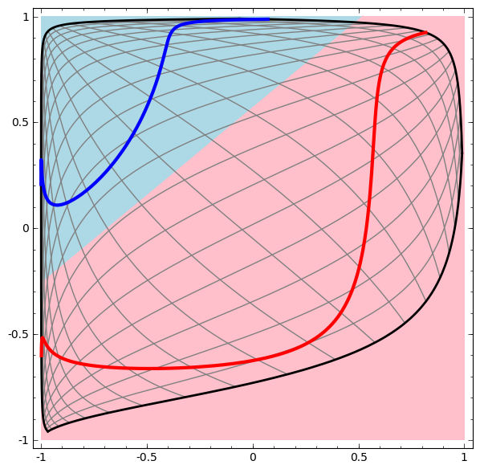
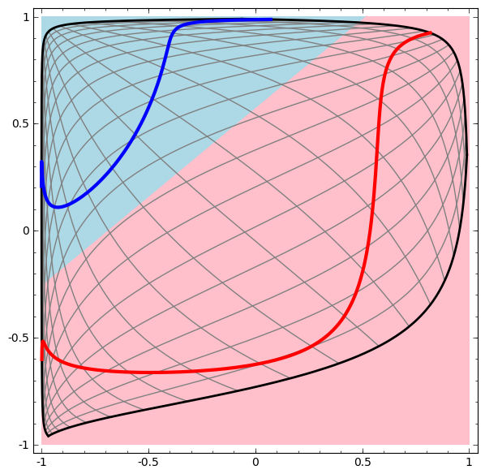
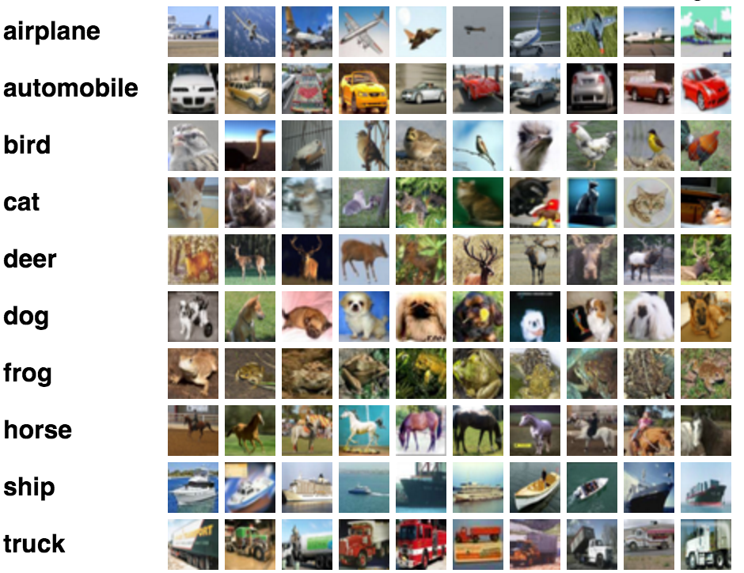

Machine Learning in the Browser with Deep Neural Networks
A Visual Introduction
data2day 2016


What is machine learning?
science of getting computers to act without being explicitly programmed
Applications of machine learning?
 



Why JavaScript for Machine Learning?
- Python and R are predominant
- Have a large and mature set of libs
- Are reasonably fast
- Using binding to C/C++ or Fortran
- JavaScript has benefits, though
- might be the language you are most comfortable with
- might be the only language around (because all you have is a browser)
- zero installation, easy to get started
- combination with interactive visualizations
Visualizing the Basics of Neural Networks
The perceptron - where it all begins
- mathematical model of a biological neuron
- creates a single output based on sum of many weighted inputs
- uses a sigmoid activation function to create (slightly) non-linear behavior
Implementing it in pure JavaScript
// Initial weights
let w0 = 3, w1 = -4, w2 = 2;
function perceptron(x1, x2) {
const sum = w0 + w1 * x1 + w2 * x2;
return sigmoid(sum);
}
function sigmoid(z) {
return 1 / (1 + Math.exp(z * -1));
}


Right, that is surprisingly simple
Code for training is a little bit more complex (but only a little bit)
Visualizing what a neuron can do
- output separates plane into two regions using a line
- such regions are called linearly separable
- can emulate most logic functions (NOT, AND, OR, NAND)
- can be trained by adjusting weights of inputs based on error in output

percepton training visualization (initial version provided as a courtesy of Jed Borovik)
A single neuron is not very powerful
but becomes much more powerful when organized in a network
Introducing Feedforward Neural Networks
https://en.wikipedia.org/wiki/Feedforward_neural_network
Using the Tensorflow Playground
Introducing our classification example
- each spot in a plane gets a prediction
- either blue or orange
- result of the neural network is a classification
- network is trained to give a good prediction


Neurons can be arranged in layers

one layer of 3 neurons
First layers takes inputs
x and y coordinate of a spot in our example
Middle layer(s) called hidden layer(s)
Just a single layer containing 3 neurons
Each neuron creates a single line classification

This is the linear classification of the lowest neuron
Output layer creates output (often softmax for classification)
combining all lines to determine two categories: blue or orange?
Data flows forward in one direction, there are no cycles

- more than one hidden layer is possible (deep neural network)
- each neuron in each hidden layer gets exactly the same input
- no connection between neurons in same layer
- each neuron in one layer feeds all neurons in the next layer
Networks can learn

- you provide samples and the corresponding right answers
- errors between right answer and prediction are called loss
- they are propagated back to adjust weights of connections
Training and Loss
- data is separated into training and test data
- in image below: training: white border, test: black border
- training data is used to train neural network
- both test and training data are used to check accuracy of prediction
- loss is to be minimized
- overfitting: training loss low, test loss much higher (to be avoided)

Demo
Visualizing how neural networks work
ConvNetJS
Same Classification example
That's what you can change directly in the browser
layer_defs = [
{type:'input', out_sx:1, out_sy:1, out_depth:2},
{type:'fc', num_neurons:3, activation: 'sigmoid'},
{type:'softmax', num_classes:2}
];
net = new convnetjs.Net();
net.makeLayers(layer_defs);
trainer = new convnetjs.Trainer(net);
Output Layer
{type:'softmax', num_classes:2}
Can separate categories if they are linearly separable
Hidden Layer
{type:'fc', num_neurons:3, activation: 'sigmoid'}
Has to transform original space into something that is linearly separable
Successful transformation
Uses deep network with more than one hidden layer
Successful transformation

Uses deep network with more than one hidden layer
More Samples of successful transformations
 


Demo
Wrap-Up
- the browser makes Deep Learning more accessible
- all the fancy deep learning stuff works in the browser
- especially good for learning and education
- direct visualization and interactivity
- Tensorflow Playground makes this especially easy to try out
- ConvnetJS for experiments with JavaScript in the browser
Thank you!
Questions / Discussion
Resources
- Tensorflow Playground in the Browser
- ConvNetJS - Deep Learning in your browser
- Understanding neural networks with TensorFlow Playground
- Neural Networks, Manifolds, and Topology
- Animated explanation of Convolutional Networks Visualizing Representations: Deep Learning and Human Beings How do Convolutional Neural Networks work?
Bonus Material
Regression
Does not classify, but tries to find a coninuous function that goes through all data points
Regression Example - Code
Quick Quiz: How many neurons in hidden layer?
layer_defs = [
{type:'input', out_sx:1, out_sy:1, out_depth:1},
{type:'fc', num_neurons:5, activation:'sigmoid'},
{type:'regression', num_neurons:1}];
Output layer no longer does classification, but regression
CIFAR-10 with Convolutional Deep Neural Networks
uses convolutional hidden layers
The CIFAR-10 dataset
Tiny images in 10 classes, 6000 per class in training set
The Convolutional Pyramid

Udacity Course 730, Deep Learning (L3 Convolutional Neural Networks > Convolutional Networks)
Input: 32x32 RGB images

Convolution (Filtering) step #1: 16 32x32 images of filtered data
// 16 5x5 filters will be convolved with the input
// output again 32x32 as stride (step width) is 1
// 2 pixels on each edge will be padded with 0 matching 5x5 pixel filter
{type:'conv', sx:5, filters:16, stride:1, pad:2, activation:'relu'}convolutional layers remove noise, add semantics
Pooling
// perform max pooling in 2x2 non-overlapping neighborhoods
// output will be 16x16 as stride (step width) is 2
{type:'pool', sx:2, stride:2}),
pooling layers in between provide translation invariance, i.e. it does not matter where in the image the object is
Softmax
{type:'softmax', num_classes:10}

assigns a probability to each of the 10 categories
Sample classification results
Other JavaScript libraries that run in the Browser
Brain.js
- very simple lib
- used to be unmaintained, but taken over by new maintainers
Synaptic.js
- small general lib for Neural Network
- nice and simple API
- good documentation
- actively maintained
neocortex.js
- Runs pre-trained deep neural networks (Keras models)
- Some really nice examples including Python Notebooks
- Clear code written in ES6